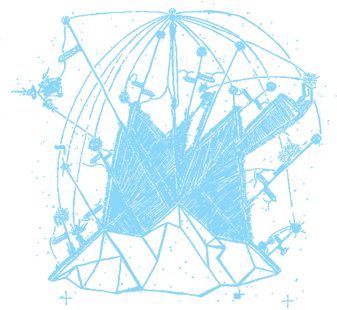

is more than a social network;
is more than a social network;
it makes your life net work...
Do you feel like trancending privacy?
 helps you open your life in a new tab and get an eyeful of your friends and enemies.
helps you open your life in a new tab and get an eyeful of your friends and enemies.

Keen for an  ?
Sign away...
?
Sign away...
it's love and it always will be